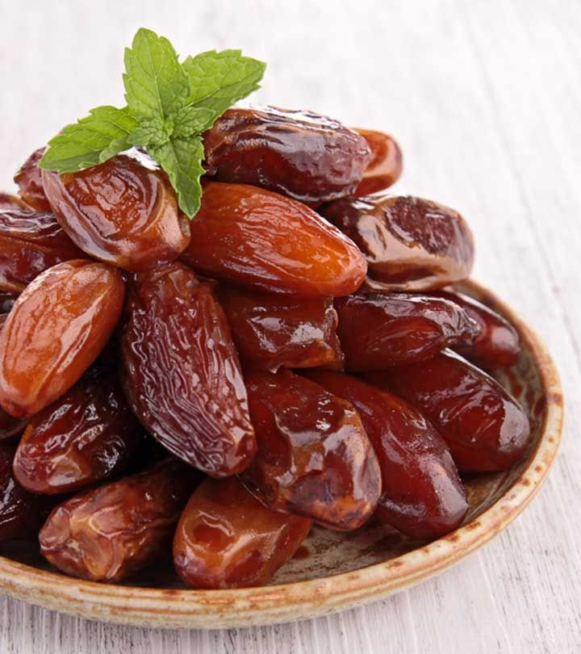

Dedikasi Kami Untuk
Kesehatan Anda
Berawal dari kebun herbal keluarga pada tahun 2008, InsanMandiri kini bertransformasi menjadi salah satu produsen minuman kesehatan terkemuka yang mengintegrasikan kearifan lokal dengan standar manufaktur modern.
- ✅ Fasilitas Produksi Higienis (Standar GMP)
- ✅ Bahan Baku Organik Pilihan
- ✅ Uji Tuntas, Hasil Berkualitas
15+
Tahun
100%
Alami
BPOM
Tersertifikasi